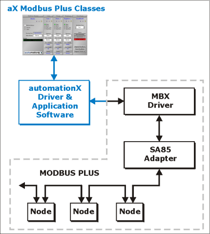

The Modbus Plus class set enables communication to a Modbus Plus network via the Modicon SA85 network adapter. automationX application software works in tandem with Modicon's MBX driver to send and receive data messages to and from Modbus Plus network nodes.
The following figure shows typical architecture from automationX to the Modbus Plus Network:
